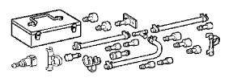
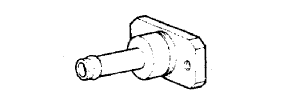
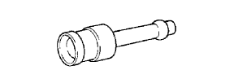
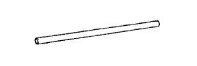

VÒI PHUN NHIÊN LIỆU > KIỂM TRA > Chuẩn bị

|  | 09268-41048 | Bộ dụng cụ đo lượng phun nhiên liệu |
|  | (09268-41091) | Cút nối No.7 |
|  | (09268-41110) | Cút nối |
| (09268-41120) | Cút nối 3 ngả | |
| (09268-41500) | Cút nối ống nhiên liệu | |
|  | (95336-08070) | Oáng |
| 09842-30080 | Dây kiểm tra EFI "H" | |
| (95333-06030) | Oáng |
 | 09082-00040 | Đồng hồ đo điện Toyota | - |
 | (09083-00150) | Bộ dây đo | - |
| Kẹp | - |
| Bình hoặc khay chứa | - |
| Oáng | - |
| Máy chẩn đoán | - |
| Khuôn đo | - |
| Túi ni lông | - |
| Dây điện sửa chữa | - |
| Đồng hồ tính giờ | - |
| Cờlê cân lực | - |